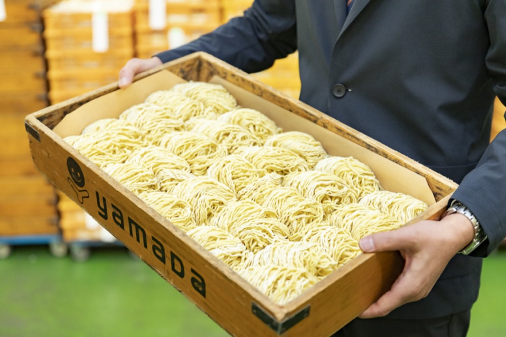
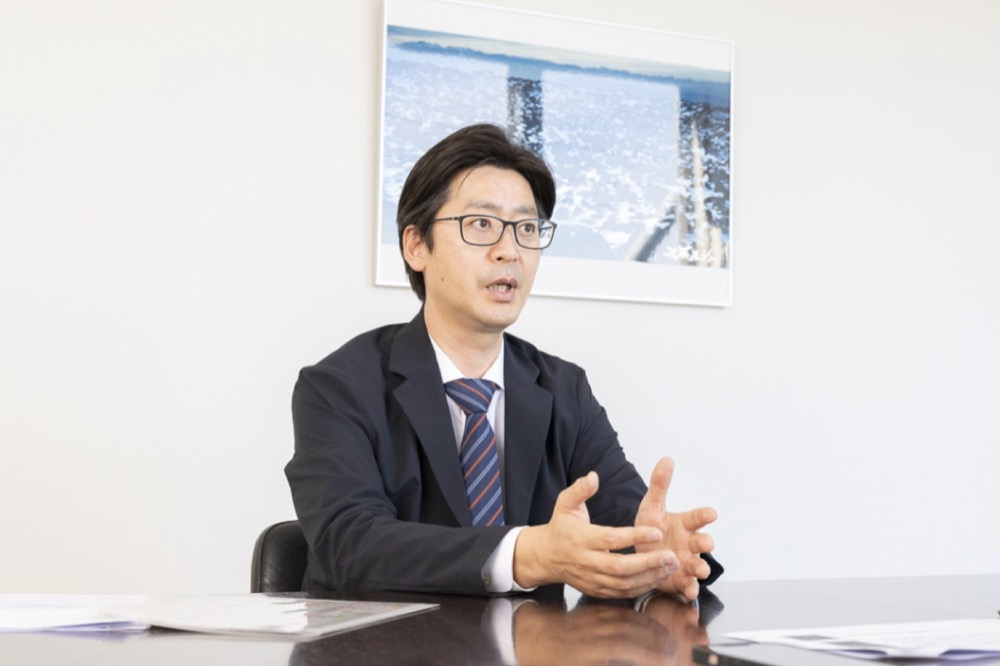
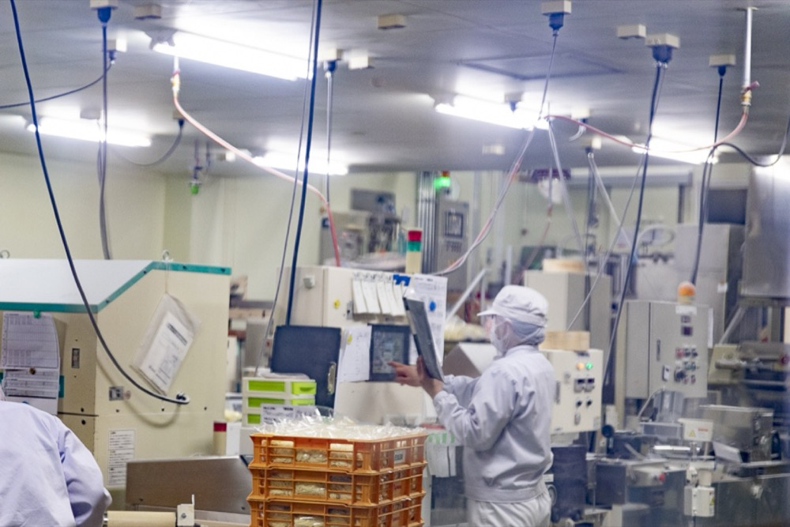
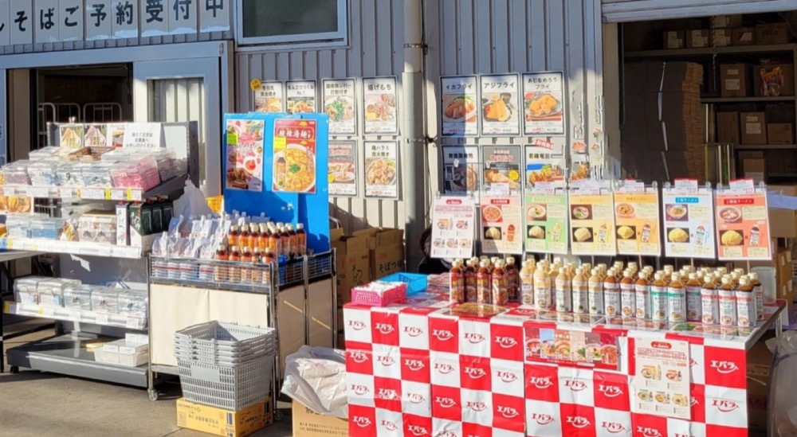
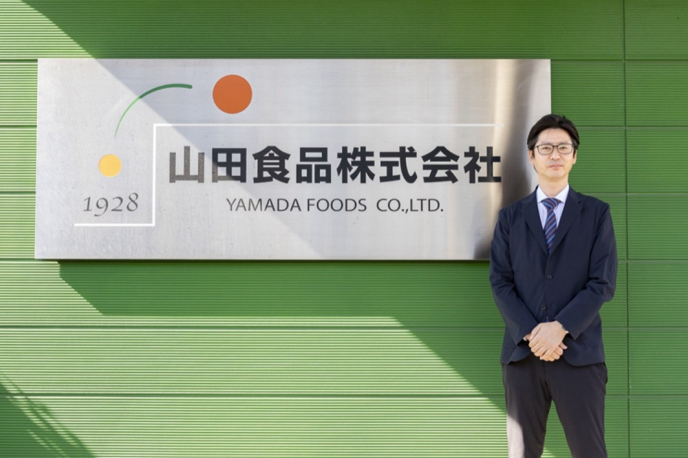

関東の麺処を支える老舗の製麺会社
櫻井 健二Kenji Sakurai
山田食品株式会社 代表取締役社長
長野県出身。日本大学経済学部卒。1996年新日本証券株式会社（現みずほ証券株式会社）に入社。京都支店、IPOコンサル、投資銀行企画、社長秘書、人事部採用チームを経て、法人業務部副部長に。2022年5月山田食品株式会社に入社し、同年8月代表取締役社長に就任。
企業サイトを見るTRACK 01
関東の麺処を支える老舗の製麺会社

山田食品株式会社は千葉県船橋市にある習志野駐屯地の近くに居を構える、主に生麺を中心に製造している老舗の食品会社だ。添加物を大量に加えた長期保存可能な麺ではなく、小麦本来の味が楽しめる生麺に特化した製造を行っているのが特徴で、地域密着の商圏で細かな顧客ニーズに対応している。
7代目となる櫻井代表が背負う山田食品株式会社の100年の歴史、そして次の100年に向けた経営戦略とは。
TRACK 02
大手証券会社から第二のステップへ


櫻井代表が代表取締役に就任したのは2022年。それまでの26年間、サラリーマンとして大手証券会社に勤務していた。1996年に新卒で証券会社に入社、8年間は京都支店でリテール営業に従事し、本部に異動後はIPOコンサルティング、投資銀行業務の企画管理、社長秘書、新卒採用の統括、そして最終的には中堅上場企業のファイナンスやM&Aを手掛ける投資銀行ビジネスの企画部門の副部長に。結果的に証券会社時代の様々な経験が経営を行うための基礎になったという。
そんな櫻井代表が山田食品株式会社と出会ったのは、今の奥様だという。「妻の実家が山田食品を経営していて、妻を通じて社長として力を貸してほしいと話が来たんです。当時48歳だった私は、50歳に近づいて第2の人生をどう歩むか考えていた最中でしたから、新しい場所で再出発したいと思って代表に就任したんです。もちろん前提としてラーメンが好きだからというのもありますが…（笑）。」と櫻井代表は語った。
まだ就任して数年の櫻井代表だが、生産ラインにおける最新設備の導入や、社内勉強会を通じた働き方の意識改革の実施、そして社内チャットツールなどのDXの実施など、多岐に渡る社内整備を実行してきた。


TRACK 03
「なぜ100年続いたのか」たどり着いたシンプルな答え
山田食品株式会社は昭和3年（1928年）に、初代店主の山田石松氏が船橋市海神町で配給の小麦粉を委託して加工し、屋台用のワンタンを作ったことからその歴史は始まった。そして今年で97年を迎え、会社は次の100年を見据えるステップに突入する。これからの山田食品株式会社として、櫻井代表はこれからの会社方針を決めなければと思い、会社自体をさまざまな視点から紐解いていた。
「なぜ山田食品という会社が100年も続けてこれたのか、それを言語化することが重要だと思いました。まずは100年ということで、老舗の多い京都の企業の特徴について研究したり、この会社の経営の流れなどを改めて調べてみたり…。ですが、そこから「これだ！」というものはなかなか見つからなかったんです。」と櫻井代表はことばを重ねた。
「なんとなくですが、見えてきているのは」と続ける櫻井代表。「毎日、真面目に麺をつくってお客様に配達することを続けていたから。すごいシンプルですが…よくよく考えると、いろんな時代のなかで一貫しておこなっていたのがこれなんですよね。なにか複雑な戦略があったというわけでもなく、自分たちができる最大限を尽くして、各地に麺を届け続けてここまできたわけです。つまりひたすらにお客様にサービスを提供してきた実績そのものが、信頼となり今の会社を支え続けているのではないか、と思っています。」